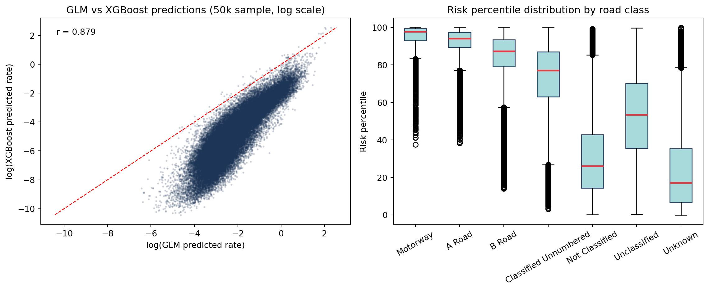
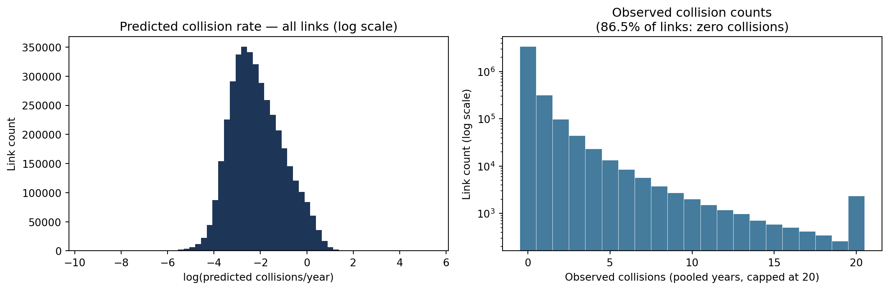

Stage 2 fits a Poisson collision model on all OS Open Roads links × AADF years using estimated AADT as the exposure offset. Two complementary models are used:
Poisson GLM (statsmodels) — interpretable coefficients, fast inference
XGBoost Poisson — captures non-linear interactions, higher predictive power
Both models are trained on link × year data then pooled to a single stable risk score per link. The pooled output (risk_scores.parquet) has one row per link with no year dimension.
from pathlib import Pathimport jsonimport numpy as npimport pandas as pdimport matplotlib.pyplot as pltimport matplotlib.colors as mcolorsfrom road_risk.config import _ROOT as ROOTRANDOM_STATE =42XGB_POSTFIX_PR2 =0.323498try:import geopandas as gpd HAS_GPD =TrueexceptException: HAS_GPD =Falserisk = pd.read_parquet(ROOT /"data/models/risk_scores.parquet")withopen(ROOT /"data/models/collision_metrics.json") as f: metrics = json.load(f)if HAS_GPD: or_path = ROOT /"data/processed/shapefiles/openroads.parquet" openroads = gpd.read_parquet(or_path) if or_path.exists() elseNoneelse: openroads =Nonecls_order = ["Motorway", "A Road", "B Road", "Classified Unnumbered","Not Classified", "Unclassified", "Unknown"]cls_in_data = [c for c in cls_order if c in risk["road_classification"].unique()]print(f"Links scored : {len(risk):,}")print(f"With collisions : {(risk['collision_count'] >0).sum():,} "f"({(risk['collision_count'] >0).mean():.1%} of all links)")print(f"Total collisions : {risk['collision_count'].sum():,}")print(f"Total fatals : {risk['fatal_count'].sum():,}")print(f"\nModel performance:")print(f" GLM pseudo-R² : {metrics['glm']['pseudo_r2']:.3f}")print(f" XGB pseudo-R² : {XGB_POSTFIX_PR2:.3f} (post-fix 5-seed mean)")print(f" GLM converged : {metrics['glm']['converged']}")
Links scored : 2,167,557
With collisions : 233,604 (10.8% of all links)
Total collisions : 450,992
Total fatals : 7,402
Model performance:
GLM pseudo-R² : 0.347
XGB pseudo-R² : 0.323 (post-fix 5-seed mean)
GLM converged : True
2 Model performance
2.1 GLM summary
g = metrics["glm"]print(f"Training rows (downsampled for GLM) : {g['n_obs']:,}")print(f"Full dataset rows : {g['n_full']:,}")print(f"Positive link-years : {g['n_pos']:,} ({g['n_pos']/g['n_full']:.2%})")print(f"Pseudo-R² (1 - D/D₀) : {g['pseudo_r2']:.3f}")print(f"AIC : {g['aic']:,.0f}")print(f"\nFeatures ({len(g['features'])}):")for feat in g["features"]:print(f" {feat}")
fig, axes = plt.subplots(1, 2, figsize=(12, 4))pos = risk[risk["predicted_glm"] >0]axes[0].hist(np.log(pos["predicted_glm"]), bins=60, color="#1d3557", edgecolor="none")axes[0].set_xlabel("log(predicted collisions/year)")axes[0].set_ylabel("Link count")axes[0].set_title("Predicted collision rate — all links (log scale)")axes[1].hist(risk["collision_count"].clip(0, 20), bins=21,range=(-0.5, 20.5), color="#457b9d", edgecolor="white", linewidth=0.3)axes[1].set_yscale("log")axes[1].set_xlabel("Observed collisions (pooled years, capped at 20)")axes[1].set_ylabel("Link count (log scale)")axes[1].set_title(f"Observed collision counts\n"f"({(risk['collision_count'] ==0).mean():.1%} of links: zero collisions)")plt.tight_layout()plt.show()

3.1 Risk percentile by road class
cls_med = ( risk.groupby("road_classification")["risk_percentile"] .median() .reindex(cls_in_data) .dropna() .sort_values(ascending=False))colors = ["#e63946"if rc in ["Motorway", "A Road"] else"#457b9d"for rc in cls_med.index]fig, ax = plt.subplots(figsize=(9, 4))ax.bar(cls_med.index, cls_med.values, color=colors)ax.axhline(50, color="black", linestyle="--", linewidth=0.8, alpha=0.5)ax.set_ylabel("Median risk percentile")ax.set_title("Median risk percentile by road class (red = major roads)")ax.tick_params(axis="x", rotation=30)plt.tight_layout()plt.show()print("Risk percentile by road class:")print( risk.groupby("road_classification")["risk_percentile"] .agg(["mean", "median", "count"]) .round(1) .reindex(cls_in_data) .to_string())

Risk percentile by road class:
mean median count
road_classification
Motorway 88.5 93.8 4084
A Road 86.2 88.0 155538
B Road 85.4 86.7 89286
Classified Unnumbered 80.4 82.6 190921
Not Classified 32.6 29.5 224878
Unclassified 49.3 49.4 1060014
Unknown 27.2 22.0 442836
4 Residual analysis
Residuals (observed − predicted × n_years) identify where the model systematically under- or over-predicts. Large positive residuals flag links that had more collisions than the model expected given their traffic and road characteristics.
Top 1% risk links by road class (21,676 total):
road_classification
A Road 12998
B Road 2655
Classified Unnumbered 2513
Unclassified 2213
Motorway 1025
Unknown 243
Not Classified 29
5.3 Excess-risk map (residual > 2)
Links where observed collisions substantially exceeded the model’s prediction given traffic volume and road type — potential candidates for engineering review.
if HAS_GPD and openroads isnotNone: excess = or_risk[or_risk["residual_glm"] >2].copy() fig, ax = plt.subplots(figsize=(10, 9)) bg.plot(ax=ax, color="#e0e0e0", linewidth=0.2, zorder=1) excess.plot(column="residual_glm", ax=ax, cmap="Oranges", linewidth=1.5, legend=True, zorder=2, legend_kwds={"label": "Residual (observed − predicted)", "shrink": 0.6}) ax.set_title(f"Excess-risk links — residual > 2 ({len(excess):,} links)\n""Had substantially more collisions than road type and traffic predict" ) ax.set_axis_off() plt.tight_layout() plt.show()
=== Stage 2 collision model summary ===
Links scored : 2,167,557
Links with collisions : 233,604 (10.8%)
Poisson GLM pseudo-R² : 0.347
XGBoost pseudo-R² : 0.323 (post-fix 5-seed mean)
Top 1% risk links : 21,676
Excess-risk links (residual > 2): 11,376
Excess-risk by road class:
road_classification
A Road 3333
Classified Unnumbered 3317
Unclassified 3179
B Road 654
Unknown 472
Motorway 299
Not Classified 122
Key observations:
XGBoost’s current honest post-fix baseline is about pseudo-R² 0.32 across five seeds (0.323 mean, with temporal features included), while the GLM sits at pseudo-R² 0.347 on its own in-sample downsampled surface. Earlier repo docs cited an XGBoost pseudo-R² around 0.86, but that figure came from a pre-fix evaluation surface that was later superseded after a feature-table leakage diagnosis. The two current pseudo-R² values are also still computed on different row subsets and with different null models (GLM: in-sample on a downsampled training set; XGBoost: out-of-sample on the full zero-heavy test set), so the gap should not be read as pure modelling lift. These metrics are from the current run after the counted-only Stage 1a filter, the Stage 2 post-event provenance guard, OSM feature enrichment, IMD features, terrain grade, and the GLM optional-feature imputation refactor. See feature engineering for the full caveat.
The GLM provides interpretable incidence rate ratios per feature; XGBoost predictions complement these with higher predictive power for the risk map.
Residuals show where traffic volume and road geometry alone under-predict observed collisions — likely reflecting local factors not in the feature set (junction design, sight lines, speed compliance).
The top 1% risk links are concentrated on high-traffic A-roads and motorways, consistent with higher exposure and absolute collision counts.
Excess-risk links (residual > 2) are candidates for targeted intervention where infrastructure or behaviour factors drive risk beyond what the model can attribute to road class and traffic alone.